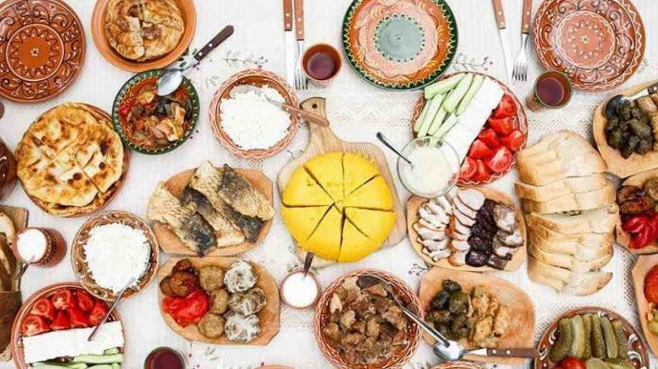

Introduction:

Discover Romania
In the heart of Europe, there lies a land steeped in millennia
of history, brimming with unique traditions and a cuisine that
tantalizes the senses: Romania. An enchanting country that offers
a world of cultural and culinary discoveries.
Romanian culture is a symphony of historical influences, from the
Roman Empire to traditional folk art. Traditional attire, known as
"ie," stands as a testament to artisanal mastery and intricate beauty.
Festivals such as "Sărbătoarea Călușarilor" celebrate legends and
traditions, immersing us in a world of myths and folk dances.
But it's Romanian gastronomy that steals the spotlight. "Mămăligă,"
the renowned polenta, welcomes every palate with its creamy texture,
accompanied by feta cheese and smântână. "Mici," grilled sausages,
and "Sarmale," cabbage leaves stuffed with meat and rice, are
delectable treats that grace the table. And the desserts, from
"Papanasi" to "Cozonac," are genuine sweet delights.
Indulge in Romania, where culture and gastronomy meld into a journey
that will enchant your senses and introduce you to a land with
deep roots and a unique flavor.
Territory:

"A Journey Through Its
Landscapes"
Romania is a nation in Eastern Europe that boasts a diverse and
captivating landscape. This land is characterized by majestic mountain ranges, lush plains, and breathtaking coastal scenery. The Carpathian Mountains, a grand mountain range, run through the heart of the country, offering spectacular mountain views and picturesque villages. Forests cover approximately 28% of Romania's territory, including the famous Hercynian Forest, one of the last primeval forests in Europe.
Below the Carpathians, you'll find the Wallachian Plain, a region of
cultivated fields and historic cities. Romania is crisscrossed by
several rivers, including the Danube, the second longest river in
Europe, and it is home to numerous picturesque lakes. Along the
Black Sea coast, you'll discover golden beaches and charming coastal
towns.
The region of Transylvania, renowned for its stunning landscapes
and the legends of Dracula, boasts medieval castles and cities such
as Brașov, Cluj-Napoca, and Sibiu. In rural communities, local
traditions endure, with quaint wooden houses and traditional
craftsmanship. Romania is also rich in historical heritage, with
sites like Bran Castle and Peleș Castle.
The country hosts numerous natural reserves and national parks, including Retezat National Park and Rodnei National Park, which protect unique flora and fauna. The Danube Delta, one of Europe's largest, is an important natural reserve.
Romania is a place of natural beauty, rich history, and traditional culture. Its geographical diversity makes it a fascinating destination for anyone looking to explore a land of great beauty and cultural significance. Give a title to this text.
Hirstory:

"From Dacia to Democracy"
Romania has a rich and complex history. Its roots can be traced back
to ancient Dacia, inhabited by the Dacians,
a Thracian-speaking people. In 106 AD, the Roman Empire conquered
the region, making it part of the province of Dacia. Over the
centuries, Romania was influenced by various cultures, including
the Goths, Huns, and Slavs.
In the 19th century, Romania struggled for independence from the
Ottoman Empire and finally achieved it in 1877. During World War I,
Romania fought alongside the Allies, gaining recognition of its
borders and the annexation of Transylvania. During World War II,
it came under the sphere of influence of the Axis powers.
After World War II, Romania became a communist state under the rule
of Nicolae
Ceaușescu, known for his brutal dictatorship. The communist regime
fell in 1989 when Ceaușescu was overthrown and executed.
Romania then underwent a transition toward a market-based
democracy. In 2004,
it joined the European Union. Today, Romania is a country with
a rich culture, a growing economy, and a evolving society.
People:
"A Tapestry of Culture
and Hospitality"
Romanians are a European population characterized by significant
cultural and ethnic diversity. The majority of the population is
of Romanian origin, but there are also Hungarian, German, Roma,
and other ethnic minorities. They are renowned for their hospitality
and warm welcome to visitors.
Romanians are often described as hardworking
and determined individuals with a strong commitment to education
and learning. Romanian culture is rich in traditions, music, dance,
and unique cuisine, with dishes like mămăligă (polenta) and mici
(grilled sausages) widely appreciated.
The primary language is Romanian, but many people also
speak other languages, such as English, French, or German.
The predominant religion is Orthodoxy, but there are also Catholic,
Protestant, and other religious communities.
Romanians take pride in their history and their struggles for
independence, and many are optimistic about the future of their
country as they continue to progress in their transition to a
market democracy within the European Union.
Economy:

"Growth and Challenges"
The economy of Romania has undergone significant changes since the
end of the communist regime in 1989 and has become one of the
growing economies in Eastern Europe. Romania has experienced
consistent economic growth in recent years, primarily driven by
ectors such as industry, agriculture, and services. The
manufacturing industry is a cornerstone of the Romanian economy,
with automotive, electronics, textiles, and chemicals being
among the major contributors. Agriculture still plays an
important role in the Romanian economy, with agricultural
productions including cereals, vegetables, and livestock.
Tourism and related services are on the rise, thanks to the
natural beauty, cultural heritage, and historic cities.
Romania has attracted foreign direct investments in sectors
such as automotive production, energy, and information
technology. The country has invested in infrastructure like
highways, ports, and airports to improve connectivity and
facilitate trade. The national currency is the Leu, and
inflation has been managed relatively stably in recent years.
There are significant economic disparities between urban and
rural regions, with the west and south of the country
experiencing more economic development. Romania has a
well-educated workforce, but salaries remain lower than the European
average, leading some skilled workers to seek opportunities abroad.
Gastronomy:
